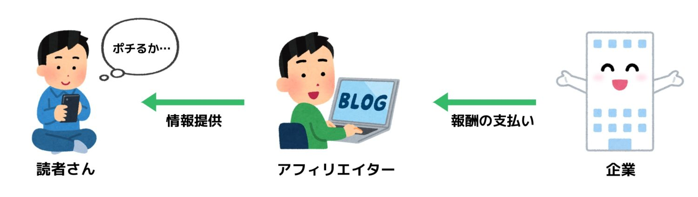
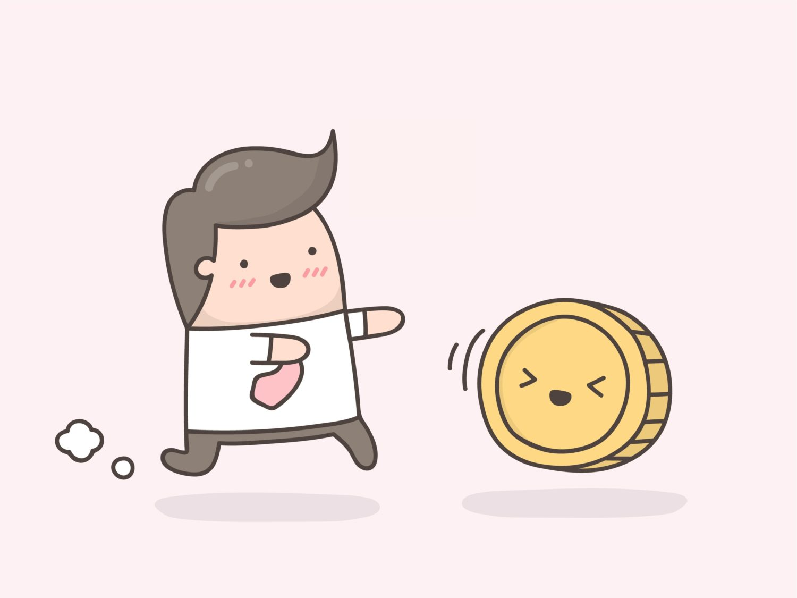

【日給１万超え】簡単に稼げる副業まとめ【僕の実体験から解説する】
こんにちは、ゆーだいです。
学生時代から、お金稼ぎを始めました。
いまは月収100万を切ることがない生活です。
さて、先日に下記のツイートをしました。
セルフバックで、１日で３万ほど稼げて、驚愕。そこからアフィリに興味が湧き、でも、最初は稼げなかった。その後もハードでしたが、いまは月300万ほどの広告収入です😌
上記を深堀りします。
すべて経験談から、解説しています。
簡単に稼げる副業まとめ【日給は１万を超える】
{kind=link}
- セルフバック：１日５万くらい可能
- イベント開催：１日１万くらい可能
本来なら「３つまとめ」とかの方が、見栄えがいいです。
しかし、ガチで「日給１万超え」を考えたときに、この２つだけと判断しました。
セルフバック：１日５万くらい可能
アフィリエイトの基礎から解説します。
まずアフィリエイトの仕組みですが、下記のとおり。

こういった感じで、要するに「企業の商品を代行販売すると、企業からお金が貰える」というビジネスです。
{kind=link}
セルフバックとは
シンプル化すると、要するに下記です。

企業が宣伝したい商品を、アフィリエイターの人は「自分で買う」ということ。
これがセルフバックです。
セルフバックの商品とは
色々とありますが、高単価は下記です。
- クレジットカードの発行
- 資格試験の資料請求
- 保険見直しの相談
上記のイメージ。
こういった業種は、わりと大きな広告費を払える企業なので、その分の「還元率＝セルフバック報酬」が高いです。
セルフバックのやり方とは
【誰でも簡単】アフィリエイトで簡単に１０万円を稼ぐ方法【秒速】
「誰でも簡単にできるアフィリエイト方法ってあるのかな？初心者の僕に教えてください。」←こういった疑問に答えます。本記事では、誰でも簡単にアフィリエイトで10万円稼ぐ方法を解説します。なお、最初にネタバレするとセルフバックの話です。「なんだセルフバックかよ」って思った方はそっとページを閉じるか、記事後半から読み始めてください。
上場企業が使っている仕組みなので、完全に安心して大丈夫です。
僕もやっていますし、リアルに稼げます。
とりあえず行動して、勉強するための書籍代を稼ぎましょう。
イベント開催：１日１万くらい可能
イベント開催も、わりとありだと思います。
僕の場合は、国際交流パーティを開いていました。
イベントで稼ぐコツ
結論は「とにかく運営が楽できて、かつ参加者が楽しめる仕組みの構築」です。
僕の場合のコンセプトは下記。
当時は大学生だったので、大学内で飲み会を開催していました。
なので、場所代は０円です。
そして缶ビールだけ当日に用意して、料理などは、参加者が持ってきます。
楽ちんすぎて、ビビりますよね。
しかし、１回の開催で、約２〜３万くらいの収入でした。
場所代が０円だと、超余裕
イベント開催で面倒なのは、場所代です。
特に都内とかだと、めっちゃ高い。
英会話教室なら、夜とかは空いてるかもですからね。
そして大切なことは、パーティ参加者が「英会話教室の見込み客である」ということ。
こういった「お互いにWin-Win」な提案を持っていくと、効率的にビジネス構築できます。
イベント運営は、色々と応用できる
いまはコロナなので、ちょっと国際交流パーティはやりづらいかもです。
しかし、例えばですが「プログラミング勉強会」とかでも、可能だと思いますよ。
営業先は、プログラミングスクール
都内には、色々なプログラミングスクールがあります。
中には集客に苦しんでいるスクールもあるので、そういった場所に営業します。
そして「初心者向けのプログラミング基礎セミナー＆質問会」を開くので、場所を借ります。
なにかスキルがあれば、オフラインのちょっとしたイベントで稼げたりします。
※オンラインでいいじゃんと思うかもですが、参加費を取る場合だと、たぶんオフラインの方が売れやすいです。心理効果の話です。
日給１万は、わりと簡単
というわけで、今回に紹介した「セルフバック、イベント開催」をしたら、たぶん「副業初月で、10万超え」とかも狙えると思います。
アルバイトで日給１万とかだと、わりと大変ですよね。
しかしセルフバックだったり、もしくは「ちょっと準備してイベント開催」をするだけで、サクッと収入が伸びる例です。
こういった知識やノウハウが溜まっていくと、いずれ「経営者として、仕組みを考えることができる人」になります。
セルフバックで稼ぎ、そしてイベントで稼ぎました。
こういった地味な稼ぎができないと、やはりその後の大きな収入も、難しいと思います。
そして、１つ問題あり。それが継続性です。
セルフバックでもイベントでも、やはり単発収入なんですよね。
ここは記事後半で解説です。
副業で、継続的に稼ぎつづける方法【積み上げ】

継続して稼ぐには、やはり積み上げですね。
{kind=link}
個人で資産を積み上げよう
最初に注意点を書くと、ここから先を実行するよりも、まずは「記事前半の内容」を実行してみてください。
なので僕は、まずは即金性のある副業でいいのでは、、と思っています。
というか、人によっては「イベント運営だけで、月10万」とかも、普通に超えますからね。
今の時代なら、イベントして、そこからサロン運営とかにつなげるとかでも、充分に収益化できます。
しかしこれだと、個人の資産が増えづらいので、そこの話をします。
質問：毎日資産が、増えていますか？
僕の場合だと、過去の人生では「ひたすらに、自分の資産を増やす」という人生でした。
- 新卒時代：エンジニア兼マーケターとして就職。働きつつ「プログラミング＆マーケティング」というスキル資産を増やした。
- 起業時代：経営者として働きつつ、マネジメント、資金管理、事業立ち上げなどのスキル資産を増やした。
- フリーランス時代：ブログやYouTubeを積み上げて、コンテンツという資産を増やした。
上記のとおり。
どんな働き方をしても、必ず「スキル資産 or コンテンツ資産」が自分に残るようにしました。これを繰り返すことで、徐々に人生は楽になります。
一方で、会社で働いても、あまりスキルが残っていない人がいます。
これは、要注意ですね。
今日から、積み上げしよう
というわけで、シンプルすぎる結論ですが、、、やはり勉強していくしかないです。
僕も本を読むとか、教科書での勉強は嫌いです。
なので常に、新しい挑戦をして、そこから学ぶことを繰り返しています。
まずは「専門性」を高めること
というわけで、第一ステップとしては、自分の専門性ですね。
例えば「飲食店員」とかだと、ぶっちゃけスキルが残りません。
会社で「ずっと雑務ばかりする人」とかもNGですね。
そういった人は、転職先を考えつつ、同時に「独学での、スキル学習」を始めましょう。副業の話から脱線してますが、これが本質です。
学ぶべきスキルは、楽しいスキル
というわけで、今回はこれくらいにします。
最後に１つ。学ぶべきスキルに関して触れると、それは「やってみて、あまり苦じゃない or ちょい楽しいスキル」がいいと思います。
ここは人によって異なるので、チャレンジしつつ、探してみてください。
すぐには見つからないと思いますが、徐々にビジネスを学び、手を動かし、成長しましょう。なお、個人で稼ぐ方法に関しては、僕のYouTubeもオススメです。
無料で発信していますので、気が向いたら目を通してみてください。
ベストな方法は、移動中に聞き流していただき、気になった部分だけ、深堀りしつつネット検索、とかがいいかなと思います。
それでは以上です。さようなら😌
P.S：普段の僕は「Twitter」を軸に発信しています。また最近は「Webマーケ教材」の作成に注力しており、ネットで稼ぐスキルを学べます。ブログの更新通知はtwitterからお知らせします。